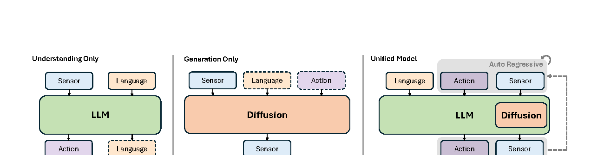
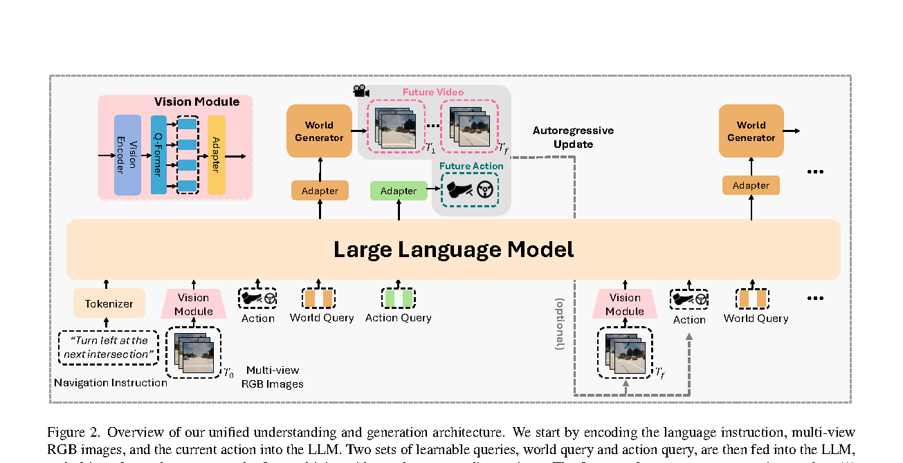
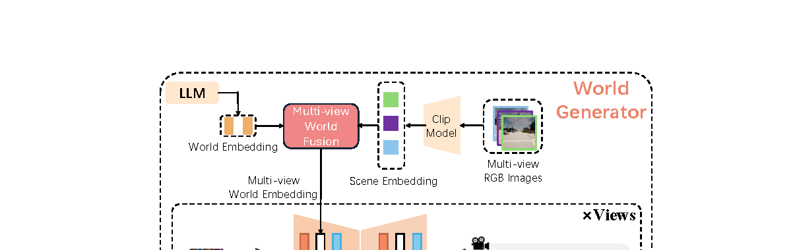

一句话总结
LMGenDrive 的核心是：用 LLM 处理语言指令和视觉上下文，用 action query 输出未来 waypoint， 用 world query 条件化多视角视频生成，从而让 future video generation 成为训练 LLM driving representation 的密集监督。
论文要解决的问题
论文把自动驾驶泛化瓶颈归因于 long-tail 和 open-world 场景：复杂语言指令、误导性提示、罕见交互、天气与区域变化，以及闭环控制误差累积。 现有 LLM/VLM driving 方法具备语言理解和常识推理，但通常直接从图像和语言映射到动作，缺少对未来场景演化的建模。 现有 generative world model 能生成未来视频，但常被作为独立预测器或数据生成器，缺少自然语言 grounding 和闭环动作输出。

创新点怎么理解
LLM 与生成式世界模型统一
LLM 负责融合语言、视觉和历史动作，world generator 负责根据 LLM 的 world embedding 合成未来多视角视频。 这让理解和想象共享同一套中间表征。
Action query / world query 解耦
action query 询问“接下来怎么开”，world query 询问“未来世界怎么变”。二者都经过 LLM，但服务不同输出头。
三阶段课程训练
先训练驾驶视觉 encoder，再做单步 planning + generation，最后做多步自回归长时训练，缓解闭环误差累积。
在线规划与离线生成双模式
在线时可丢弃 diffusion generator 降低延迟；离线时可把生成视频和动作反馈回模型，生成长时未来视频。
这篇的范式创新不能简单写成“首次用 world model 监督驾驶”。DriveVLA-W0 已经把 future visual prediction 作为 VLA 的 dense supervision。 LMGenDrive 的相对新意更准确地说是：把这种生成式监督放进 LLM instruction-following closed-loop driving，并用 query 接口同时服务动作和视频生成。
方法总览

multi-view RGB + navigation instruction + current / previous action
↓
Vision Encoder + Q-Former compression
↓
LLM with action queries and world queries
↓
action query output -> waypoints -> PID control
world query output -> diffusion world generator -> future multi-view videoVision Encoder：把驾驶视觉压缩给 LLM
Vision encoder 处理 left、front、right 三路相机。每张图先经 ResNet 提取特征，再通过 transformer 融合多视角信息。 与依赖 LiDAR 的方法不同，LMGenDrive 用 BEV positional encodings 作为 query，因为未来自回归生成时不可能得到未来 LiDAR。
Vision encoder 输出三类 token：
BEV tokens
waypoint tokens
traffic-light token第一阶段用 object detection、traffic light classification、waypoint regression 预训练视觉模块； 后续训练中 prediction heads 被丢弃，只保留 frozen vision encoder。
LLM：Action Query 和 World Query
LLM 是整个系统的“中枢”。论文使用 Vicuna-7B，将语言 tokens、压缩视觉 tokens、action queries、world queries 以及最近历史 token 放进同一个上下文。 为降低视觉 token 数量，Q-Former 用 8 个 learnable queries 将每帧约 2k visual tokens 压缩成 compact frame-level features。
| Query | 承担的问题 | 输出 |
|---|---|---|
| Action query | 接下来如何驾驶 | future waypoints 与 instruction completion flag |
| World query | 未来世界如何演化 | world embeddings，作为视频 diffusion generator 的条件 |
Multi-View World Generator

World generator 使用 diffusion U-Net。它不只依赖 LLM world embedding，还用 last-frame multi-view images 的 CLIP features 提供外观和初始状态。 这些条件通过 self-attention 和 cross-attention 融合，再注入 diffusion denoising 过程。
L_DM = E_{t, epsilon}[ || epsilon_theta(z_t, c, t) - epsilon ||^2 ]
这里的 c 是 multi-view image features 与 LLM world query features。训练目标迫使 LLM 产生对未来动态有用的世界表征。
三阶段训练
Vision encoder pretraining：3M CARLA expert frames，监督 object detection、traffic light、waypoint。
Single-step planning and generation：输入单帧多视角图像和语言，预测 waypoint、completion flag、future video。
Multi-step long-horizon training：生成视频自回归反馈到下一步，video generator 冻结但梯度可传回 LLM。
L = L_waypoint + L_completion + L_diffusion在线规划时 diffusion generator 可以不运行；离线生成时则启用 autoregressive video generation。 因此它更像 generation-supervised driving，而不是在线 rollout planning。
和 DriveVLA-W0 到底像不像
很像。二者都把 future visual world modeling 当成 dense supervision，用来补足稀疏 action labels 的不足； 也都在在线驾驶推理时可以绕过重型生成模块。
| 维度 | DriveVLA-W0 | LMGenDrive |
|---|---|---|
| 核心问题 | VLA supervision deficit 与 data scaling law | 语言理解与未来想象没有统一进闭环驾驶 |
| world model 作用 | future image prediction 提供 dense self-supervision | future video generation 监督 LLM 学时空动态 |
| 推理时生成模块 | 通常 bypass，保留 action expert | online planning 可丢弃 diffusion generator |
| 相对新意 | 系统研究 scaling law 和 action expert | LLM instruction following、world/action query、离线自回归视频生成 |
LMGenDrive 的范式创新性确实会被 DriveVLA-W0 削弱。更公平的定位是： 它不是“首次把 world model 当作监督”，而是“把生成式 world supervision 放进 LLM 指令闭环驾驶，并让 action query 与 world query 显式解耦”。
实验结果
模块消融
| 设置 | DS | RC | IS | 解读 |
|---|---|---|---|---|
| Baseline | 62.2 | 74.5 | 0.85 | 完整 LMGenDrive |
| w/o world generator | 53.4 | 65.8 | 0.80 | 未来视频监督对时空理解明显有用 |
| w/o action queries | 58.7 | 70.4 | 0.84 | 显式动作查询比普通动作预测更稳 |
| w/o visual pre-training | 54.9 | 67.1 | 0.81 | 驾驶视觉语义预训练很关键 |
| w/o stage-3 training | 55.6 | 68.9 | 0.80 | 长时序训练缓解闭环误差累积 |
局限与疑问
- 范式不够新：world model as dense supervision 与 DriveVLA-W0、LAW 等路线高度相关。
- 实验主要在 CARLA：long-tail/open-world claim 很大，但真实道路证据不足。
- 在线不生成视频：如果部署时丢弃 diffusion generator，它更像训练辅助，而非真正在线 imagination planning。
- 训练成本高：Vicuna-7B、Stable Diffusion 1.5、AnimateDiff、多视角视频生成，工程负担不小。
- 缺少 scaling 证据：相比 DriveVLA-W0，它没有系统证明 world supervision 如何随数据规模放大收益。
值得带走的启发
LMGenDrive 的启发不是“视频生成一定要在线跑”，而是 generation 可以作为一种强监督来塑造驾驶模型的时空表征。 对后续研究，更有价值的问题可能是：如何证明模型真的利用了未来世界表征，而不是仅从多任务训练中得到普通 regularization。